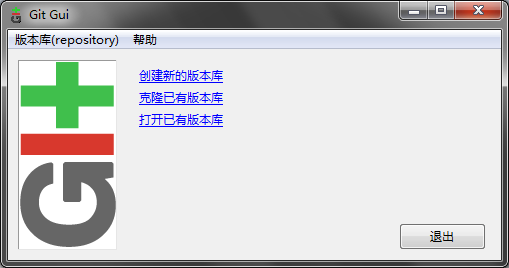
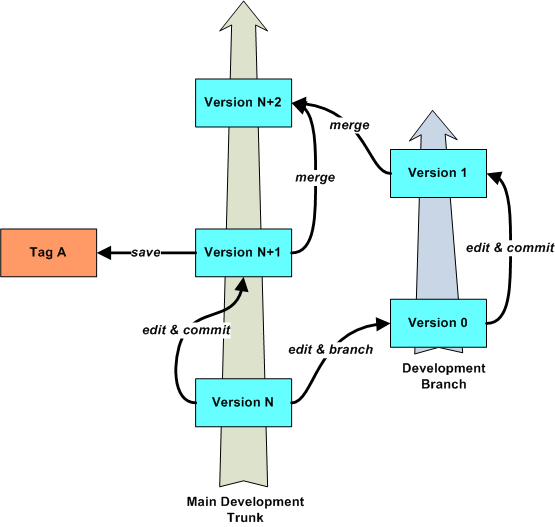
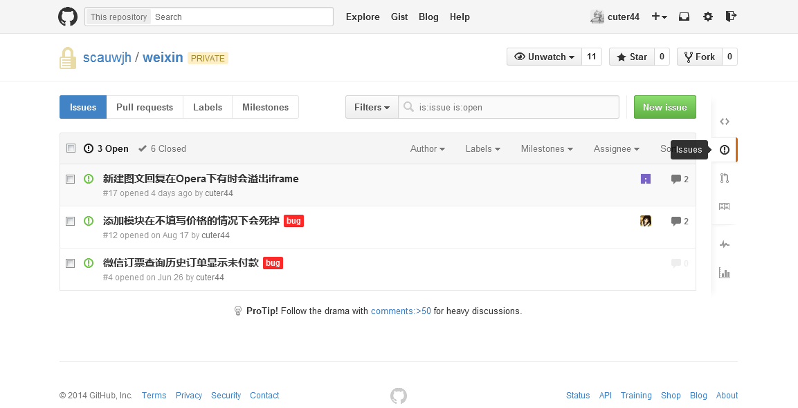
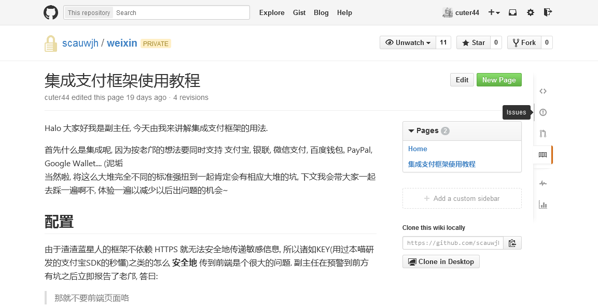
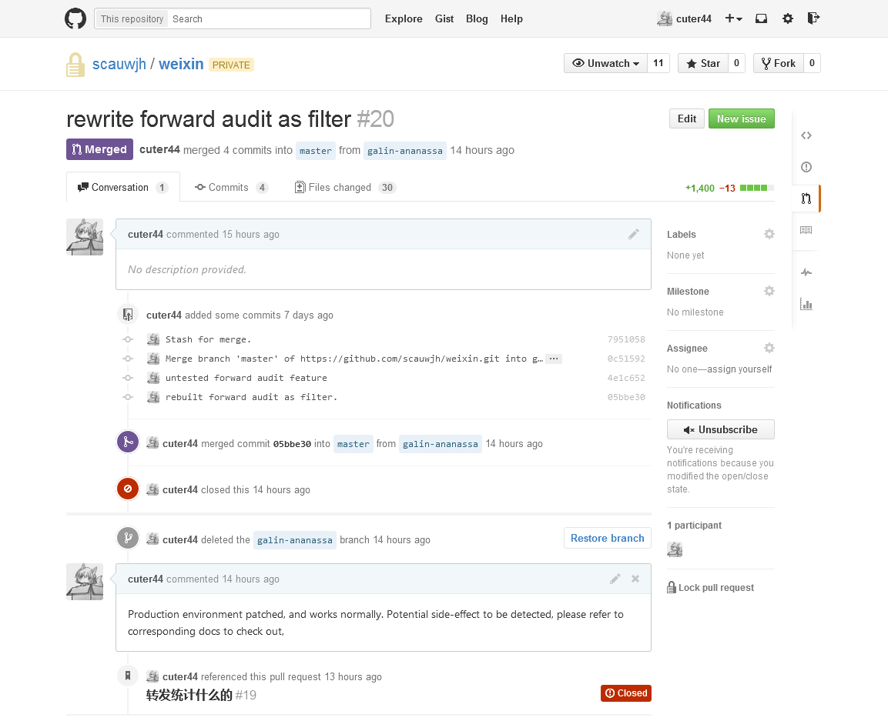

@authors @github://scau-sidc/git-tutorial/contributors
@version 4.1.1-build20151231
@license  CC 3.0 BY CN
CC 3.0 BY CN
@source github://scau-sidc/git-tutorial
Archives
* Ver. 2014 - ./index-archive-20141212.html
@authors @github://scau-sidc/git-tutorial/contributors
@version 4.1.1-build20151231
@license
@source github://scau-sidc/git-tutorialArchives
* Ver. 2014 - ./index-archive-20141212.html
通常来说这个时候应该说下 git是什么, 但为了 dismystification , 这里不会展开. 有兴趣的同学请自行维基 ↗.
现在, 只需要将 git 理解成 一个可以在多人环境下随时保存和合并源代码的工具 即可.
Github 就是依托 git 所建立的代码托管平台/社区, 你可以在那里四处乱逛, 寻找自己想要的代码, 吐槽别人; 或者直接脑洞大开自己写个软件出来, 搞不好还会受到路过大神的加持.
不过对于英语成绩不好的同学来说, Github 是个噩梦. 在本篇教程中将只涉及 Github 的仓库托管功能. 因此只需要知道 Sign up, Sign in, Create Repository 这几个词组的中文意思即可.
提供类 Github 服务的供应商还有很多, 比如 OSChina Git ↗(简中/EN), GitCafe ↗(简中/繁中/EN), bitbucket ↗(EN), coding.net ↗(简中). 但在此我们建议使用 Github, 一个充分理由是 git 的作者 Linus Torvalds 使用 Github ↗.
那当然就是在自机部署一个 git 了.
一个命令搞掂:
apt-get install git
, 或者等价的包管理器指令(yum, pacman 等)
, 或者通过源码编译安装(此处省略1000字)
对于蓝星人来说通常如下展开:
然后按蓝星人的风俗一路 Next 下去, 但副主任建议如下的加点方式:


理由是...为了能更方便地集成到win, 以及在跨平台间兼容.
(这个请去请教部长)
再重复一次, 在本教程中只使用 Github 的仓库托管功能. Github 的其余黑科技将在附录部分解说.
什么是仓库托管呢? 举个栗子,
在使用 git 之前你们写的代码都存在自己的硬盘里:
老师: (夺命追魂call)"你程序写好了? 拿来我看看"
你: "哦"(找U盘, 复制粘贴, 千里迢迢呈送老师台启)
(翌日)
老师: (夺命追魂call)"同志快醒醒你还有几行代码有bug没改"
你: "哦"(翻箱倒柜找另一个U盘, 复制粘贴, 千里迢迢呈送老师台启)
(Repeat)
通过仓库托管将项目/代码放置在 Github 后:
老师: (夺命追魂call)"你程序写好了? 拿来我看看"
你: "https://github.com/foo/bar"
老师: "..."
(翌日)
老师: (夺命追魂call)"同志快醒醒你还有几行代码有bug没改"
你: "哦"(更改, 提交, 上传)"改完了. 昨天那个地址."
老师: "Good..."
之后的实验需要用到 Github, 请务必注册一个账号.

当然不可能立即就碉堡到这种程度↑咯 (´・ω・｀)
对于 Windows 来说, 安装 msys-git 会附赠一个 gui , 可以通过开始菜单/文件管理器的上下文菜单/git gui 指令来启动它.
总之我们已经启动 git 了, 大多数情况下会弹出下面这个东东:

意思很明确, 你要新建(init)呢? 还是克隆(clone)呢? 还是打开呢?
今年我们选 创建新的版本库, 在随后的对话框中挑选一个你喜欢的位置来置放你的代码. 这里以 F:/project/hello-world/ 为例.
完成后会变成以下的样子:

解说:
左上角红色的部分 表示 工作目录(Working Copy), 也就是你以传统方式写代码时(i.e. 不使用 git ), 打开项目文件夹时看到的文件集合. 仅当你新建/修改/删除文件时, 他们会被列出在这里.
左下角绿色的部分 表示 Index(或称为 缓存区, 目前没有公认的中文翻译), 是你在缓存改动准备用于提交的地方, 关于提交的概念将在后文详述.
WC 和 Index 中的文件图标是可以点击的(注意我说的是图标= =b). WC 中的文件被点后会进入 Index, 表示需要缓存( Carol )这个改动; Index 中的文件被点后会进入 WC, 表示放弃缓存这个文件的改动( reset --mixed );
右上角黄色的部分 表示 差异(diff) 仅在你在点击 WC 或者 Index 中的文件名时(注意我说的是文件名= =b), 这个区域会列出这个文件改动了哪些地方.
右下角用来写 提交说明 这个也在后文讲.
选择 菜单栏 的 版本库(repository) > 图示所有分支的历史(Visualize all barnches history), 会调用另外一个程序. 这货叫做 gitk , 大概长得像下面的样子:

界面上方由线和点组成的部分称为版本树(History), 按各次提交的逻辑顺序倒序排列. 这条线上的每一个小圆点表示一个 提交(commit), 各种小圆点/小标签都有不同的含义:
HEAD, 是仓库当前的状态, 通俗来说就是(打游戏时)目前读出的存档点.每个点相当于(游戏的)一个存档, 可以从任何一个点读档然后任意地展开. 所有蓝点原则上无法改动, 亦无法单独地删除.
分支(branch) , 其中有些带有 嫩肉色前缀 的表示 远程分支(remote branch). 前者是存在于此仓库的分支, 后者是存在于别的仓库的分支 tag 或者 里程碑(milestone), 通常会写着类似 1.0.0 的版本号, 这是给大牛发行用的.
版本树的存在意义在于, 你可以创造无数平行的小宇宙↑. 这些小宇宙有相对独立的时间线, 但相互之间可以相互干涉或者融合.
版本树的每一个 ● 提交 都是独立的状态(类比成游戏的存档), 于是你可以从任一个节点读档然后继续展开. 还有一个和游戏存档类似的特性是它们可以被分发, 在其他的机器上完全地再现.
而 分支 和 Tag 则起到命名标记的作用, 方便人类以视觉快速地找到某些特别的提交. 两者的区别是分支通常会随着提交和合并而自动演进, 而 Tag 则是完全静态的.
版本树实际存储在项目文件夹之中, 一个名为 .git 的隐藏文件夹里. 如果不小心删掉的话所有历史记录都将会消失.
随着项目的扩增, 版本树会长得...很好看. 比如工作室贡献翻译的 vim-cheat-sheet ↗ 或者工作室开发的 wxpay-sdk ↗
接下来我们做的实验, 分组的.
大概 2-3 人一组, 如果你正在独自观看这篇教程, 这意味着你需要至少找一个小伙伴或者以一人分饰两角.
堂授课请使用 手心手背分组法 或者 抛硬币分组法 快速分为2-3人的小组.
New Repository. 创建远程仓库.Repository name 你们喜欢就好. (这里以 hello-world 为例)Name 填写 origin, Location 使用之前复制的值. 确定.克隆(clone), 相当于在(在本地创建仓库, 设定 origin 为源仓库地址, 复制源仓库内容)的命令集合.编辑(Edit) → 选项(Options), 在最上面两栏填写自己的 用户名(User name) 和 邮件地址(Email address). 不必要填写与 Github 一致. git 利用这两个字段标识代码的作者, 便于项目的参与者相互之间取得联系.现在可以开始写代码了.
F:/project/hello-world/写 hello world, 比如:
// hellow.c
#include<stdio.h>
int main(int argc, char *argv[])
{
printf("hello world");
return(0);
}
保存, 最好顺便编译一次看写对了没有.
hellow.c 会出现在左上角 未缓存的改动(UnCarold Changes) 区域里, 表示 git 检测到你的改动了. 如果没看到, 点击下方的 重新扫描(Rescan), 要求 git 检查改动.hellow.c 的图标, 它会转移到左下方的 已缓存改动(Staged Changes) 里.在下方的文本框撰写提交说明, 提交说明是用于描述此次提交对整个项目的影响, 便于其他人(也包括将来的你自己)快速地进行检索. 推荐的格式将在附录中讲述, 现在先这样填写:
inital commit.
提交(commit) 了上传(push). 
提取(fetch) 到本地仓库.push fetch 等远程交换类指令在不指定目标仓库时会缺省将 origin 作为目标.远端(Remote) → 从...提取(Fetch from) → origin分支(Branch) → Checkout → master, 切换到 master 分支.合并(Merge) → 本地合并(Local Merge). 现在 Bob 应该处于 master 分支上, 应该会出现 Merge Into master 的字样.跟踪分支(Tracking Branch) → origin/master → 合并(Merge).分支(Branch) → 新建分支(Create) , 名字可以随便决定, 在此我们以 branch-bob 为例.现在我们要写代码了:
// HelloWorld.java
public class HelloWorld {
public static void main(String[] args) {
System.out.println("hello world");
return;
}
}
按上一节讲述的方法进行 提交 和 上传.
如果将版本树比作真正的树, 那分支就好比树上萌发的新芽.
上一代的版本管理工具, 比如 SVN ↗ , 大多是不支持"分支"这种特性的, 版本号随每次提交自增 1, 修改历史严格线性. 在这种前提下, 经常会发生 冲突 并且无法自动合并:

至今世界上还有很多陈年项目是使用 SVN 进行版本管理的, 长年的折磨之下猿们也学会了以曲线救国的方式来模拟分支, 比如私自开小坑:

(对此我只能表示...(´・ω・｀)
好了我们扯回 git.
如果你们已经做过需要组队完成的课程设计作业, 那你们一定进行过类似这样的流程: 拿到一个大任务(Epic) → 按人员拆分每个人负责一部分(Task & Assign) → (各自完成任务) → 归集各人的成果并进行组装 → 测试装配起来的成品是否符合初期目标 → 更改部件和重新组装, 重复直至满足目标为止.
在之前的实验中我们已经完成...呃...大概第三步的工作了, 一切都很顺利. 但之后就会变成噩梦, 组长为了组装各个部件可能需要对不具合的部分进行修剪和删改. 以人力来完成会非常...蛋疼(比如思政的那些××调查报告之类).
分支为这种场景提供解决方案. 通过和队友准实时地共享工作状态, 可以解决闭门造车的问题. git 则为分支提供进一步支持, 所有人每次提交的细节(改了哪些文件的哪些行, 谁改的, 谁先谁后...)都被记录在案, git 则利用这些信息来进行自动合并或者辅助人工合并.
分支有如下一些特性:
Starting Revision, 可以从这里选择分支点.跟踪分支(Tracking Branch), 表示这个分支在另一个仓库的同位物.在之前的实验中我们已经实践了一次合并(origin/master → master, 实质相同的分支相互吸收本质其实也是合并). 接下来的实验演示合并实质不同的分支(真・合并)以及解决冲突.
远端(Remote) → 从...提取(Fetch from) → origin分支(Branch) → Checkout → master, 切换到 master 分支.合并(Merge) → 本地合并(Local Merge). 现在 Carol 应该处于 master 分支上, 应该会出现 Merge Into master 的字样.跟踪分支(Tracking Branch) → origin/master → 合并(Merge).分支(Branch) → 新建分支(Create) , 名字可以随便决定, 在此我们以 branch-carol 为例.写代码:
// HelloWorld.java
import java.util.Random;
public class HelloWorld {
public static String randomString(int i) {
Random ran = new Random(i);
StringBuilder sb = new StringBuilder();
while (true) {
int k = ran.nextInt(27);
if (k == 0)
break;
sb.append((char)(64 + k));
}
return sb.toString();
}
public static void main(String[] args) {
System.out.println(randomString(-229985452) + " " + randomString(-147909649));
}
}
按上一节讲述的方法进行 提交 和 上传.
在此假设 Alice 是项目组组长, 负有整合项目的职责, 接下来她需要这么做:
之所以发生冲突是因为两个人在不同的分支上都增加了 HelloWorld.java 这个文件, 并且 git 发现这两个操作无法被串行化. git 因为无法判断应该取舍哪些内容, 于是报告冲突, 要求人工介入.
冲突的文件 HelloWorld.java 会显示在 git-gui 的 未缓存更改 区域, 点击文件名会显示如下的内容:
<<<<<<< HEAD
+// HelloWorld.java
+
+public class HelloWorld {
+ public static void main(String[] args) {
+ System.out.println("hello world");
+
+ return;
+ }
+}
=======
+ // HelloWorld.java
+
+ import java.util.Random;
+
+ public class HelloWorld {
+ public static String randomString(int i) {
+ Random ran = new Random(i);
+ StringBuilder sb = new StringBuilder();
+ while (true) {
+ int k = ran.nextInt(27);
+ if (k == 0)
+ break;
+
+ sb.append((char)(64 + k));
+ }
+
+ return sb.toString();
+ }
+
+ public static void main(String[] args) {
+ System.out.println(randomString(-229985452) + " " + randomString(-147909649));
+ }
+ }
>>>>>>> origin/branch-carol
并且在 HelloWorld.java 里也是相似的内容. 这些由 git 添加的标记含义如下:
<<<<<<<, >>>>>>> 之间的块称为 Hunk. 是 git 通过比对之后分离的分歧区块.======= 分隔合并的目标/来源分支相对于它们的共同父版本以来发生的变化.解决冲突的方法有两个:
<<<<<<<, =======, >>>>>>> 标记删掉. github 会以此检查冲突是否都解决完了.工具(Tools) 提供了集成外部程序的能力, 可以通过配置追加直接调起外部程序(通常是编辑器)的菜单项, .在此假定我们要保留 Carol 的版本:
<<<<<<< 到 ======= 的范围删掉, 将 >>>>>>> 单独一行删掉.注意我们为了演示如何解决冲突而故意让 Carol 制造冲突, 正确的展开应该是 Carol 注意到 Bob 添加了 HelloWorld.java 这个文件, Carol 从 master 建立 branch-carol 分支后, 应该先合并 branch-bob 然后再在 Bob 的基础上修改 HelloWorld.java .
另外, 工作划分的科学性 和 程序设计的耦合度 也是影响冲突发生频度的重要因素. 理想的状况下的划分能尽量地避免触及到同一个文件, 相应地减小冲突的发生状况.

Github 是目前世界最大的程序猿同性交友源代码托管和协作网站, 围绕 git 的版本管理功能扩展了很多好玩的功能. 突出 社交化/开源/轻量 等要素.
以下是为英语渣特别提供的讲解, 已经玩得很溜的同学可以跳过.
登录之后的第一个画面就是 Timeline, 不过通常都没啥好看的, 相比真・同性交友(喂)的 Timeline 来说这个也太干巴巴了.
随便戳一个人的名字会去到他的个人主页(比如副主任的), 左边是 biography(在 settings 中设定). 右侧分了好几块, 从上到下分别是:
另外在别人的主页时右上角会有 按钮, 意思是"请收下我的菊花膝盖".
Repository 是 Github 的基本组织单元, 每个 repo 页对应着具体的仓库(比如我们刚刚一直在折腾的 hello-world). 通常项目作者在宣传自己项目的时候会通过粘贴 URL 或者 Widget 将访客引导到此. 另外也可以通过 搜索 和 Explore频道 在这数十万的仓库中拣选自己感兴趣的内容.
以 这篇教程 的主页为例. 首先右上角三个操作:
按钮旁边的数字表示 Watch/Star/Fork 这个仓库的人数, 戳进去可以看具体是谁.
之后在页面的右侧(改版后位于顶部二级导航栏), 其中 Code 展示这个仓库的主页以及列出文件. 其余的板块如下所列

每个仓库都会附带一个轻量级的跟踪系统, 可以用于 你发现 bug 并且想报告给作者/向作者提问提建议/请求队友协助(比如要求新的API)/记录自己的待办事项. 通过这里报告 bug 之后责任者和大家都能够看到, 热心的责任者可能会联络你询问 bug 的细节, 或是答复你的报告.

Wiki 就是关于这个软件如何使用的说明, 以及一些特性的解释等. 通常由仓库的责任者撰写, 对于开源项目还会有热心群众协助撰写和翻译.

直接上传更改的必要前提是, 你必需是某个仓库的 collaborator. 但对于开源项目来说不可能将所有的潜在参与者逐一添加. 这时则通过 Fork 和 Pull Request 机制来放宽编辑条件.
Fork 操作可以将他人的仓库复制一份到自己的名下. 因为这是名义上属于你的操作, 所以你具有完全的写权限. 当你完成某些修改之后, 你可以向这个仓库的原作者发送 Pull Request 提醒其检查你的更改并采纳到来源仓库中.
PR 亦可以在同仓库内进行. 比如 Bob 在完成 HelloWorld.java 后不确定其中是否有缺陷, 则他可以向 Alice 发送 PR 以提醒她在合并之前先检查一次代码.
galin)上传到 Github.
然后仓库的主人和这个 PR 的责任者会收到邮件. 他需要检查你的 PR, 选择接受或者拒绝该PR. 到这里 PR 就完成了, 界面看上去会变成题图的样子.
就是你正在看这篇教程所依赖的托管服务了, 它会将当前仓库里的 gh-pages 分支作为网站发布. 通过一种名为 jekyll 的工具.
比如本工作室的博客就是几只大牛利用业余时间受老邝所迫撸出来的.

Gist 通常是因为特定目的而撰写的小段代码. 其本质也是仓库, 支持大部分仓库的操作. 但通常因为只有一两个文件于是懒得很隆重地为他们分别建立仓库.
因为部分内容包含了某些真理所以通常都会被 GFW 墙掉.
比如副主任的正方抢课脚本
最开始工作室开荒的时候, 大家都不是很懂, 于是提交描述各种乱来...
整合
↑ 整合了啥没说, 还是要翻代码
有时还会看到些嘲讽向的:
没修改什么
没修改什么你交个毛线!! (＃°д°)
于是乎, 久病成良医, 慢慢地琢磨出一套标准:
登录/激活功能追加完成
+ Web API, 详情请参见javadoc
+ /authorize/register
! 现在还不能发邮件, 但是会通过json返回激活之必要参数
+ /authorize/activate
* /authorize/login
+ 追加了样例
* /authorize/logout
+ 追加了样例
* /authorize/getRsaKey
+ 追加Criteria机能, 详请参考wiki:Criteria
+ 追加了用于RSA加密的实用工具, 详请参考wiki:服务器部署指南
提交的标题不说了, 很容易就能总结出来.
然后下面以树状的方式列出更新的内容. 前导的符号表示更新的类型, + 表示新增, * 表示修改, - 表示删除, 这些和 git diff 的表示法相容. 需要额外注意的内容则用 ! 表示.
(坑. MD 貌似不具有术语表的支持能力, 如果要写术语表貌似要手动插入大量标记. Someone help?)